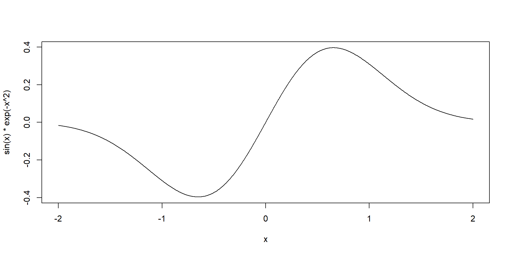
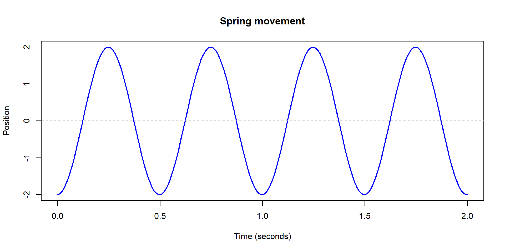
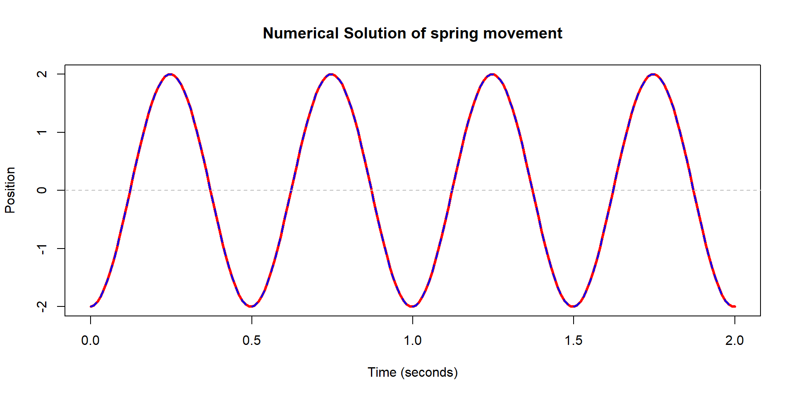
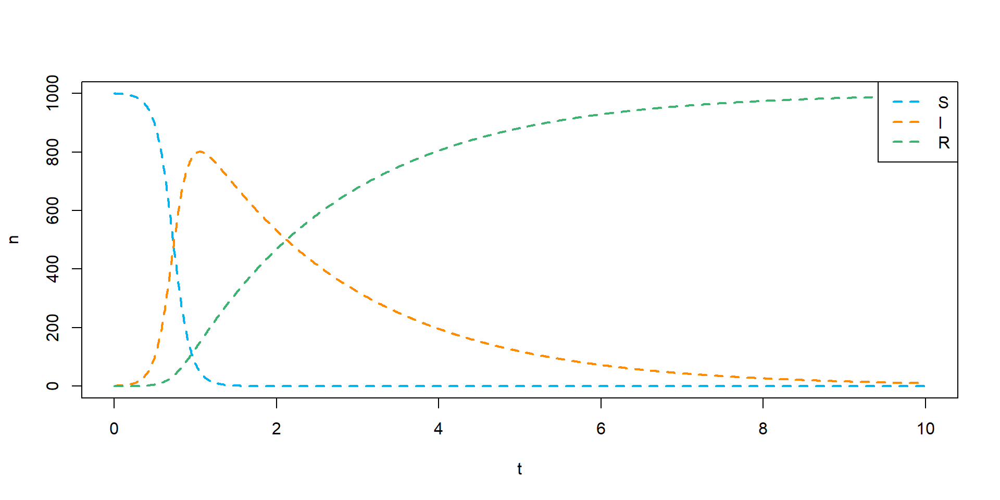
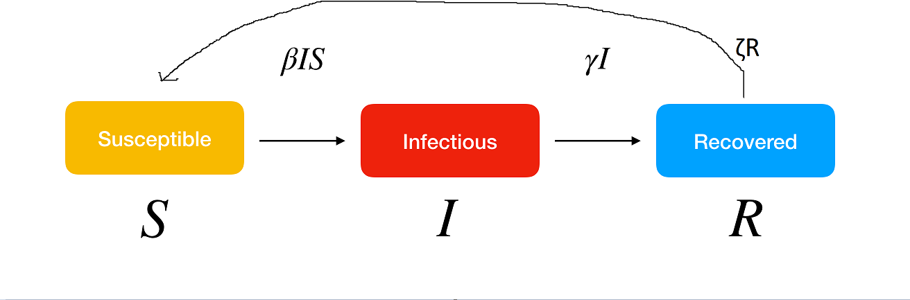
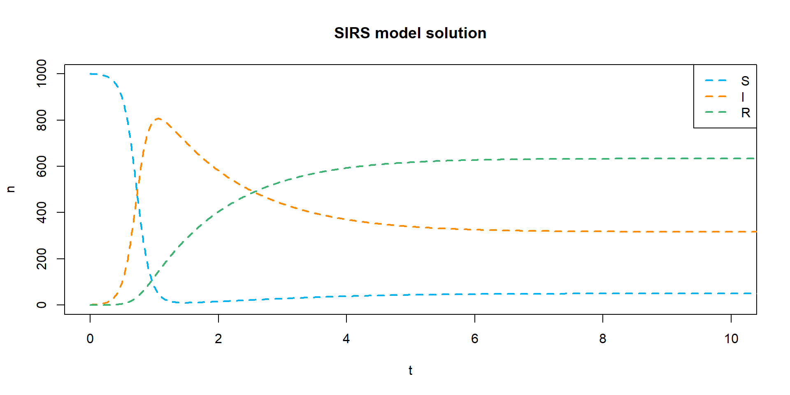
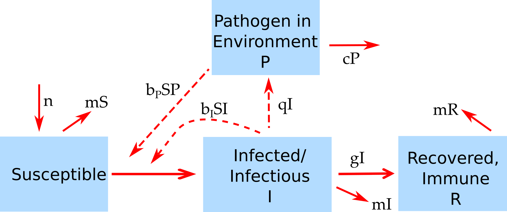

Module XX: FP Applications
Learning goals
- Use function-writing and functional programming techniques to deal with applied epidemiology problems.
- Optimize your own function with
optim(). - Simulate and solve differential equations with
deSolve.
optim()
What is optim()
- Generic R interface to optimization algorithms.
- Optimization: for a function \(f(x)\), find \(x^\star\) so that \(f(x^\star) \geq f(x)\) for any other \(x\).
- Takes a function to be minimized as an argument. (If you want the maximum, you need to put a negative sign.)
Simple example
- Find the maximum value of \(f(x) = \sin(x)e^{-x^2}\).
Arguments explained
paris a vector of your parameter values. You need to pick starting values for the algorithm, usually the choice isn’t super important. (It can be for complicated problems.)fnis the function you want to minimize (or maximize with thefnscale = -1control argument).methodis the optimizer to use, this is a really technical choice. I preferBFGSbutBrentis also good for 1 parameter problems andNelder-Meadis usually good for 2+ parameter problems ifBFGSisn’t working.controlhas a lot of complicated options that you usually won’t need,fnscale = -1is the main one to know about.
Why use optim()
lm()andglm(), etc., do all of that stuff for me? Why do I need to do it by hand?- Sometimes you have a problem that doesn’t fit neatly into a pre-written model!
- We’ll get to an example where this is true, but let’s build our way up.
Optim sampling example
- Suppose you’re in charge of monitoring mosquito traps for West Nile Virus at some health department (see, e.g., PMCID: PMC2631741).
- You have 20 different traps you can check, and at each trap you select 10 mosquitoes for testing. We don’t have enough money or good enough equipment to test all of those mosquitoes, so we pool them together and get an overall yes (1) or no (0) for presence of mosquitoes.
- This month, 7 out of 20 traps tested positive.
- Estimate the underlying mosquito infection risk from the pooled data using maximum likelihood.
- Note that you can do this as a binomial
glm(). But this won’t be true in our next example. - Let’s work through the math you need.
- Given an infection rate, \(p\), the probability that pool \(i\) tests positive is \[ P(+) = 1 - (1 - p)^{10} \]
- The probability that 7 pools out of 20 tested positive is then \[ {{7}\choose{20}} \bigg(1 - (1 - p)^{10}\bigg)^7 \bigg((1 - p)^{10}\bigg)^{20-7} \]
- This is written in R as
dbinom(7, size = 20, prob = 1 - (1 - p)^10). - For technical reasons, it is easier to minimize the negative log likelihood than it is to directly maximize the likelihood.
- You should write a function that gives the negative log likelihood and pass this function to
optim()to find the best value of \(p\).
initial_guess <- 7 / 20
# You could write out the math for this function by hand if you wanted to
# But dbinom uses some nice tricks to be faster and more accurate.
nll <- function(p) {
nll <- -dbinom(7, size = 20, prob = 1 - (1 - p)^10, log = TRUE)
return(nll)
}
optim(
par = initial_guess,
fn = nll,
method = "L-BFGS-B", # Or "Brent"
lower = 0.001,
upper = 0.999
)$par
[1] 0.04217128
$value
[1] 1.690642
$counts
function gradient
15 15
$convergence
[1] 0
$message
[1] "CONVERGENCE: REL_REDUCTION_OF_F <= FACTR*EPSMCH"- The output tells us that \(p \approx 0.02\) has the minimal negative log-likelihood at 1.69, so from the data we have, this is the most likely mosquito infection rate.
Bonus stage!
- Usually getting an approximate Wald-type confidence interval is very easy with
optim(). - We need to refit the model with
hessian = TRUE. (Math terms: the Hessian returned here is the negative Fisher information matrix. The standard errors of the parameters are the square roots of the diagnol of the inverse Fisher information matrix.)
res <- optim(
par = 0.1,
fn = nll,
method = "L-BFGS-B",
lower = 0.00001,
upper = 0.99999,
hessian = TRUE
)
est <- res$par
se <- sqrt(diag(solve(res$hessian)))
# Approximate CI
ci_lower <- est - 1.96 * se
ci_upper <- est + 1.96 * se
c(ci_lower, ci_upper)[1] 0.01137851 0.07296406- So in our report, we could say that we estimate an 4.2% WNV infection risk for mosquitoes in our area with a 95% CI of about 1.1% to 7.3%.
You try it!
- Let’s extend the binomial example to a situation where we don’t have a built-in ML option in R.
- In real life, your mosquito traps are probably heterogeneous. One process that can contribute to heterogeneity is zero-inflation: at some sites, there are no mosquitoes with WNV because WNV hasn’t been introduced to that area yet.
- So now we know that if we observe a negative trap, it could be because there’s no WNV at all, or because we didn’t catch any mosquitoes with WNV. Call the probability that WNV has been introduced into the trap region \(\kappa\).
- Estimate \(p\), the mosquito infection rate, and \(\kappa\), the zero-inflation probability, assuming that 7 of 20 pools were positive and each pool had 10 mosquitos.
- We introduce \(\kappa\) into our model by now modeling the probability that a pool tests positive as \[ P(+) = \kappa\bigg(1 - (1 - p)^{10}\bigg). \]
- Now you just need to handle optimizing two parameters at one time. The input to your function needs to be a length two vector.
- Hint: Your initial guess should be a length two vector (
c(..., ...)) and your optimization function should look like this.
- Hint: when you call
optim()you need to make sure thatpar,lower, andupperare all length-two vectors. You should still use the “L-BFGS-B” method for this problem.
- Solution:
nll_zip <- function(par) {
p_infect <- par[1]
kappa <- par[2]
p_pos <- kappa * (1 - (1 - p_infect) ^ 10)
nll <- -dbinom(7, 20, prob = p_pos, log = TRUE)
return(nll)
}
initial_guess <- c(0.05, 0.5)
res <- optim(
par = initial_guess,
fn = nll_zip,
method = "L-BFGS-B",
lower = rep(0.001, 2),
upper = rep(0.999, 2),
hessian = TRUE
)
res$par
[1] 0.1068171 0.5171114
$value
[1] 1.690642
$counts
function gradient
14 14
$convergence
[1] 0
$message
[1] "CONVERGENCE: REL_REDUCTION_OF_F <= FACTR*EPSMCH"
$hessian
[,1] [,2]
[1,] 307.8070 111.32366
[2,] 111.3237 40.27431- That’s all you had to do for this problem, but if you try to get the CI using the same method, you can see that this approximate method does a terrible job here.
- Unfortunately there’s no easy fix for this specific problem.
est <- res$par
se <- sqrt(diag(solve(res$hessian)))
# Approximate CI
ci_lower <- est - 1.96 * se
ci_upper <- est + 1.96 * se
cat(
paste0("Infection risk: ", round(est[[1]], 2), " (", round(ci_lower[[1]], 2),
", ", round(ci_upper[[1]], 2), ")"),
paste0("Risk WNV in area: ", round(est[[2]], 2), " (", round(ci_lower[[2]], 2),
", ", round(ci_upper[[2]], 2), ")"),
sep = "\n"
)Infection risk: 0.11 (-6.31, 6.52)
Risk WNV in area: 0.52 (-17.22, 18.26)Bonus problems
The likelihood of a sample with multiple observations is the product of the likelihood for each datapoint. (Or, the negative log-likelihood of the sample is the sum of the negative log-likelihood of each datapoint.) Using the
mos-nyc.csvdataset, which describes the number of positive pools out of total pools collected for some counties in New York State, estimate the mosquito infection rate under both the simple and mixture models. Assume these samples use 50 mosquitoes per pool instead of 10.For an extra super bonus problem (not solved here), figure out how to combine your
optim()code with what we learned about bootstrapping to compare the Wald-type CI from the Hessian with a bootstrap CI.
deSolve
Differential equations and other types of horoscopes
- A differential equation is an equation with a derivative in it. E.g: \[ \frac{d^2x}{dt^2} + \omega^2 x = 0 \] is a differential equation from physics.
- Here x is position, t is time, and \(\omega\) is some constant.
- This differential equation describes how springs and pendulums move over time.
Spring motion
- This differential equation describes how a spring moves over time.

- Through math magic, we can figure out that the curve traced out by the spring position has to be \[ f(x) = A\cos(\omega t) + B \sin(\omega t) \]
- Where \(A\) and \(B\) are real numbers that are determined by where the spring starts and its initial speed.
- Since we know this, we can make a plot of the spring movement.
# Parameters
omega <- 4 * pi # angular frequency = sqrt(k / m)
A <- -2 # initial displacement
B <- 1 / omega # initial velocity divided by omega
# Time vector
t <- seq(0, 2, by = 0.01) # 0 to 2 seconds
# Analytical solution
x <- A * cos(omega * t) + B * sin(omega * t)
# Plot
plot(t, x, type = "l", col = "blue", lwd = 2,
xlab = "Time (seconds)", ylab = "Position",
main = "Spring movement")
abline(h = 0, col = "gray", lty = 2)
- So what do we do if we don’t know the math magic?
- We use a numerical solver. In R, the best one is in the
deSolvepackage. These are tools that use good approximations to get the solution. - The only downside is that we have to write our code in a very specific way.
# We have to do some transformations to make this DE work with deSolve
# but you can ignore that for now or you can google "transform a second order
# DE into system of first order DEs" if you want.
library(deSolve)
# Function for our DE (system)
spring_ode <- function(t, state, parameters) {
with(as.list(c(state, parameters)), {
dx1 <- x2
dx2 <- -omega^2 * x1
list(c(dx1, dx2))
})
}
# Initial state: x(0) = -2, dx/dt(0) = 1
state <- c(x1 = -2, x2 = 1)
# Time points to solve for
times <- seq(0, 2, by = 0.01)
# Parameters list
parameters <- c(omega = omega)
# Solve ODE
out <- ode(y = state, times = times, func = spring_ode, parms = parameters)
str(out) 'deSolve' num [1:201, 1:3] 0 0.01 0.02 0.03 0.04 0.05 0.06 0.07 0.08 0.09 ...
- attr(*, "dimnames")=List of 2
..$ : NULL
..$ : chr [1:3] "time" "x1" "x2"
- attr(*, "istate")= int [1:21] 2 222 449 NA 6 6 0 52 22 NA ...
- attr(*, "rstate")= num [1:5] 0.01 0.01 2.01 0 0
- attr(*, "lengthvar")= int 2
- attr(*, "type")= chr "lsoda"- We can plot the solution to make sure it looks the same too.
# Convert to data frame
out_df <- as.data.frame(out)
# Plot displacement vs time
plot(out_df$time, out_df$x1, type = "l", col = "red", lwd = 3,
xlab = "Time (seconds)", ylab = "Position",
main = "Numerical Solution of spring movement")
lines(t, x, col = "blue", lty = 2, lwd = 2)
abline(h = 0, col = "gray", lty = 2)
- They are exactly the same.
OK, wait a second.
- This is obviously very exciting. But who cares about springs?
- It turns out that for many biological/social processes, it’s easier to write down how things change than it is to write down exact formulas.
- And derivatives describe how things change.
Compartment models
- If we divide up a population into states or compartments, usually we can write down how we expect people to move between those compartments.
- For example, consider the famous SIR model.
Source: DOI 10.3390/sym14122583
- You don’t need any math magic to write down differential equations from this model, you just need some training on how to read it.
\[ \begin{aligned} \frac{dS}{dt} &= -\beta I S \\ \frac{dI}{dt} &= \beta I S - \gamma I \\ \frac{dR}{dt} &= \gamma I \end{aligned} \]
- It is a true fact about differential equations that most (systems/equations) are impossible to solve via math magic, and we must resort to numerical solutions.
- It is impossible to solve the SIR system analytically with normal math magic, although it is possible using functions you’ve never heard of.
SIR model in deSolve
- Let’s walk through an example of solving SIR in deSolve.
- We need the following things to give to DSAIDE: a set of time points to evaluate our system at, a list of parameters of the system, an initial condition/state that describes the component populations at time \(0\), and a function that uses all of those things to update the system.
- Parameters: \(\beta\) (the force of infection) and \(\gamma\) (the recovery rate). I’ll arbitrarily set \(\beta = 0.01\) and \(\gamma = 0.5\) since I know it will make a good picture.
- Time points: it doesn’t really matter what we choose as long as it goes far enough out to see the patterns we’re interest in and is fine-grained enough to get good detail. For this problem we’ll use times of \(t = 0, 0.01, 0.02, \ldots, 9.99, 10\). Choosing the right ones usually takes some trial and error. Running more time points can take a really long time for complicated models.
- Initial state: we need how many susceptible, infected, and recovered people at time \(0\). Let’s say 1000 S, 1 I, and 0 R. Note you need at least one infected person to have an epidemic!
- A function. This is the tricky bit, and we have to write it kind of weird. We can leave out that weird
with()thing from before, but it does make your life easier so I recommend learning it.
sir_ode <- function(t, y, parameters) {
# If you don't use with() you have to do this
b <- parameters["beta"]
g <- parameters["gamma"]
S <- y["S"]
I <- y["I"]
R <- y["R"]
dS <- -b * I * S
dI <- b * I * S - g * I
dR <- g * I
# For deSolve the output always has to be a list like this
out <- list(c(dS, dI, dR))
return(out)
}- Now we should be able to call
deSolveand get a solution.
sir_soln <- deSolve::ode(
y = sir_initial_condition,
times = t_seq,
func = sir_ode,
parms = sir_parms
)
head(sir_soln)| time | S | I | R |
|---|---|---|---|
| 0.00 | 1000.0000 | 1.000000 | 0.0000000 |
| 0.01 | 999.8951 | 1.099654 | 0.0052452 |
| 0.02 | 999.7798 | 1.209224 | 0.0110131 |
| 0.03 | 999.6529 | 1.329698 | 0.0173557 |
| 0.04 | 999.5135 | 1.462153 | 0.0243301 |
| 0.05 | 999.3602 | 1.607779 | 0.0319991 |
- Let’s plot the solution.
plot(
NULL, NULL,
xlim = c(0, 10), ylim = c(0, 1000),
xlab = "t", ylab = "n"
)
my_colors <- c("deepskyblue2", "darkorange", "mediumseagreen")
lines(sir_soln[,"time"], sir_soln[,"S"], col = my_colors[1], lwd = 2, lty = 2)
lines(sir_soln[,"time"], sir_soln[,"I"], col = my_colors[2], lwd = 2, lty = 2)
lines(sir_soln[,"time"], sir_soln[,"R"], col = my_colors[3], lwd = 2, lty = 2)
legend(
"topright",
legend = c("S", "I", "R"),
lty = 2, lwd = 2, col = my_colors
)
You try it!
- Update your model slightly so that people who are Recovered can become Susceptible again over time. This is called a SIRS model. It looks like this.

- Hint: the system of equations implied by my incredible drawing is:
\[ \begin{aligned} \frac{dS}{dt} &= -\beta I S + \zeta R\\ \frac{dI}{dt} &= \beta I S - \gamma I \\ \frac{dR}{dt} &= \gamma I - \zeta R \end{aligned} \]
- Hint: you need to add another parameter and update the function, but you don’t need to change anything about the initial state or time values (if you don’t want to).
- Solution!
sirs_initial_condition <- sir_initial_condition
sirs_t <- seq(0, 1000, 0.01)
sirs_parms <- c(sir_parms, zeta = 0.25)
sirs_ode <- function(t, y, parameters) {
# If you don't use with() you have to do this
b <- parameters["beta"]
g <- parameters["gamma"]
z <- parameters["zeta"]
S <- y["S"]
I <- y["I"]
R <- y["R"]
dS <- -b * I * S + z * R
dI <- b * I * S - g * I
dR <- g * I - z * R
# For deSolve the output always has to be a list like this
out <- list(c(dS, dI, dR))
return(out)
}
sirs_soln <- deSolve::ode(
y = sirs_initial_condition,
times = sirs_t,
func = sirs_ode,
parms = sirs_parms
)
head(sirs_soln)| time | S | I | R |
|---|---|---|---|
| 0.00 | 1000.0000 | 1.000000 | 0.0000000 |
| 0.01 | 999.8951 | 1.099654 | 0.0052388 |
| 0.02 | 999.7798 | 1.209224 | 0.0109865 |
| 0.03 | 999.6530 | 1.329698 | 0.0172938 |
| 0.04 | 999.5136 | 1.462153 | 0.0242165 |
| 0.05 | 999.3604 | 1.607779 | 0.0318156 |
- Let’s plot this solution the same way.
plot(
NULL, NULL,
xlim = c(0, 10), ylim = c(0, 1000),
xlab = "t", ylab = "n",
main = "SIRS model solution"
)
my_colors <- c("deepskyblue2", "darkorange", "mediumseagreen")
lines(sirs_soln[,"time"], sirs_soln[,"S"], col = my_colors[1], lwd = 2, lty = 2)
lines(sirs_soln[,"time"], sirs_soln[,"I"], col = my_colors[2], lwd = 2, lty = 2)
lines(sirs_soln[,"time"], sirs_soln[,"R"], col = my_colors[3], lwd = 2, lty = 2)
legend(
"topright",
legend = c("S", "I", "R"),
lty = 2, lwd = 2, col = my_colors
)
- By including the \(\zeta\) parameter, we get an endemic equilibrium instead of a disease-free equilibrium.
- This model can give you some other interesting oscillation patterns if you play with the parameters, but almost all parameter combinations will lead to a steady state.
You try it (problem 2)
- If you’re ready for another challenge, try solving the equations for this model where the pathogen is environmental.
- This model also includes a birth rate \(n\) (assuming all individuals are born into the susceptible compartment) and a death rate \(m\) that assumes people from the S, I, and R compartments all die at the same rate. If you want to, you can leave out any terms with \(m\) and \(n\) in them, they aren’t too important (or you can set them to 0 in your model).
 - Here are the equations implied by the model. \[ \begin{aligned} \frac{dS}{dt} &= n - b_{I}IS - b_{P}PS -mS \\ \frac{dI}{dt} &= b_{I}IS + b_{I}PS -gI - mI\\ \frac{dR}{dt} &= gI - mR \\ \frac{dP}{dt} &= qI - cP \end{aligned} \]
- No solution typed out for this problem. You can work on it on your own and email me questions, or if we have time we can work on it together.
More resources
- Differential equations are actually really fun. For a quick introduction (requires calculus) I recommend “Differential Equations in 24 Hours” by Scott Imhoff.
- For a no-code no-calculus exploration of epidemiology DE’s, take a look at Andreas Handel’s R packages DSAIRM (within-host models) and DSAIDE (between-host models).
- Or there are MANY other SISMID courses about ODE modeling.
Bonus stage: deSolve AND optim
- If you have observed epidemic data, you can actually estimate the parameters of an ODE system.
- It’s much more difficult than estimating a linear model, though.
- Suppose we’ve observed the data in
SIR-observed.csvand we want to estimate parameters assuming an SIR model fits the best. Note that we typically only observe case counts in real data, so that’s what is in this data. - Let’s walk through a quick implementation of a model fit. First load the data.
| day | total_cases |
|---|---|
| 1 | 1 |
| 2 | 5 |
| 3 | 22 |
| 4 | 44 |
| 5 | 109 |
| 6 | 271 |
- We can use all the stuff we already built for an SIR model
deSolverun. The hard part is figuring out how to fit it to our data.
- The easiest way is to use the SSR on the case counts, so we’ll minimize \[ SSR = \sum_{i = 1}^n \bigg(I - \hat{I}(\beta, \gamma)\bigg)^2 \] where \(\hat{I}(\beta, \gamma)\) are the case counts predicted by an SIR model with parameters \(\beta\) and \(\gamma\).
- So we need to define a function for optim that takes the parameters as an argument, calculates the \(\hat{I}\) values for those parameters, and then gets the SSR between the observed and predicted case counts.
sir_pred <- function(par) {
sir_parms <- c(beta = par[1], gamma = par[2])
sir_initial_condition <- c(S = 1000, I = 1, R = 0)
times <- seq(1, 100, 1)
sim <- deSolve::ode(
y = sir_initial_condition,
times = times,
fun = sir_ode,
parms = sir_parms
)
i_hat <- sim[, "I"]
fit_ssr <- sum((dat$total_cases - i_hat) ^ 2)
return(fit_ssr)
}- Now we can run
optim().
res <- optim(
par = c(0.1, 0.1),
fn = sir_pred,
hessian = TRUE,
method = "L-BFGS-B",
lower = c(0, 0)
)
point_sir <- res$par
se_sir <- sqrt(diag(solve(res$hessian)))
ci_sir <- point_sir + outer(se_sir, c(-1.96, 1.96))
out <- cbind(point_sir, ci_sir) |> round(5)
rownames(out) <- c("beta", "gamma")
colnames(out) <- c("point", "lower", "upper")
out| point | lower | upper | |
|---|---|---|---|
| beta | 3.62954 | 3.40695 | 3.85213 |
| gamma | 0.04126 | 0.04124 | 0.04128 |
- We can see that we’re quite confidence in our estimates of \(\beta \approx 3.6\) and \(\gamma \approx 0.04\).
- The problem with that is that those are nowhere close to the parameters I used to simulate the data (beta = 0.001, gamma = 0.05).
- These differential equation models are hard to optimize! But there are other SISMID modules that focus on how to make these models work right, we just want you to be able to program them.
- Part of the problem is that this is very sensitive to the choice of optimizer. If we rewrite our function to implicitly have the 0 boundary constraint we can use unconstrained optimizers.
- Some are much worse for this problem (Nelder-Mead) and others (simulated annealing) can be better. In particular, simulated annealing is stochastic and will sometimes generate a very good answer and sometimes will not.
- Getting a handle on these kind of problems requires a lot of practice and involves a lot of stuff that we unfortunately don’t have time to talk about.
sir_pred <- function(par) {
sir_parms <- c(beta = par[1], gamma = par[2])
sir_initial_condition <- c(S = 1000, I = 1, R = 0)
times <- seq(1, 100, 1)
# New part
# Return a huge number if the paramaters are negative
if (any(par <= 0)) return(1e12)
sim <- deSolve::ode(
y = sir_initial_condition,
times = times,
fun = sir_ode,
parms = sir_parms
)
i_hat <- sim[, "I"]
fit_ssr <- sum((dat$total_cases - i_hat) ^ 2)
return(fit_ssr)
}
set.seed(103)
res <- optim(
par = c(0.1, 0.1),
fn = sir_pred,
hessian = TRUE,
# Use simulated annealing, which can be better for these kind of problems.
method = "SANN"
)
point_sir <- res$par
se_sir <- sqrt(diag(solve(res$hessian)))
ci_sir <- point_sir + outer(se_sir, c(-1.96, 1.96))
out <- cbind(point_sir, ci_sir) |> round(5)
rownames(out) <- c("beta", "gamma")
colnames(out) <- c("point", "lower", "upper")
out| point | lower | upper | |
|---|---|---|---|
| beta | 0.00100 | 0.00100 | 0.00100 |
| gamma | 0.05441 | 0.05438 | 0.05445 |